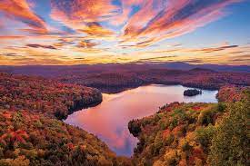

Travel
Yellowstone National Park

Mammoth Hot Springs has a number of actively forming Travertine terraces.
Photo Gallery


Vermont
Vermont, located in the northeastern United States, is a state renowned for its natural beauty and charm. It is known for its breathtaking mountain ranges, serene lakes, dense forests, and captivating rural landscapes. The Green Mountain National Forest covers much of the state, offering abundant outdoor activities and adventure opportunities. In winter, skiers flock here to enjoy snow-covered slopes, while summer beckons hikers, cyclists, and campers to explore its pristine wilderness. Furthermore, Vermont boasts picturesque small towns with a countryside vibe and a unique farming landscape, making it a destination where rural charm thrives. Whether you're seeking the beauty of nature or embracing a tranquil way of life, Vermont is a place worth visiting.
Photo Gallery


Shanghai

Shanghai, often referred to as the "Pearl of the Orient," is a dynamic and vibrant metropolis in China. As one of the world's largest cities, Shanghai is a dazzling blend of tradition and modernity. With its iconic skyline featuring towering skyscrapers like the Shanghai Tower and the Oriental Pearl Tower, it's no wonder that Shanghai is often considered the financial and economic hub of Asia. Beyond its impressive architecture, the city boasts a rich cultural heritage, reflected in its historic neighborhoods such as the Bund and the French Concession. Here, you can stroll along tree-lined streets, explore colonial-era buildings, and savor a mix of international cuisines. Shanghai is also a global center for fashion, art, and entertainment, with a thriving arts scene, world-class museums, and a bustling nightlife. Visitors to Shanghai are sure to be captivated by its energy, diversity, and the seamless fusion of old and new.
Photo Gallery